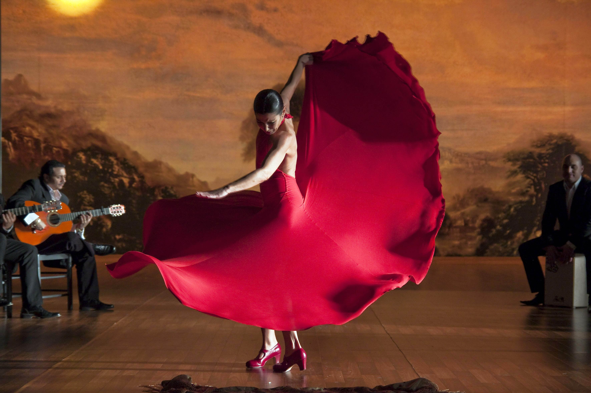
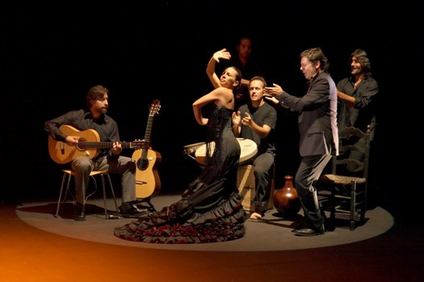
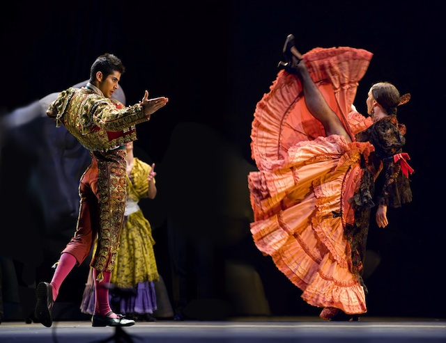

La Música
El flamenco es una forma de música popular española que incluye el canto, el baile, el toque y palmas. Hay muchos diferentes estilos flamencos, pero hay sólo 12 que se utiliza a menudo son. En su forma más pura del baile flamenco se improvisa, pero hay momentos en los que está coreografiada.
El flamenco ha ganado popularidad en todo el mundo. En Japón hay más escuelas de flamenco que en España. La parte del baile del flamenco recibe la mayor atención, pero la música detrás de ella es donde está el corazón del flamenco es. La guitarra está hecho especialmente apenas para el flamenco.


